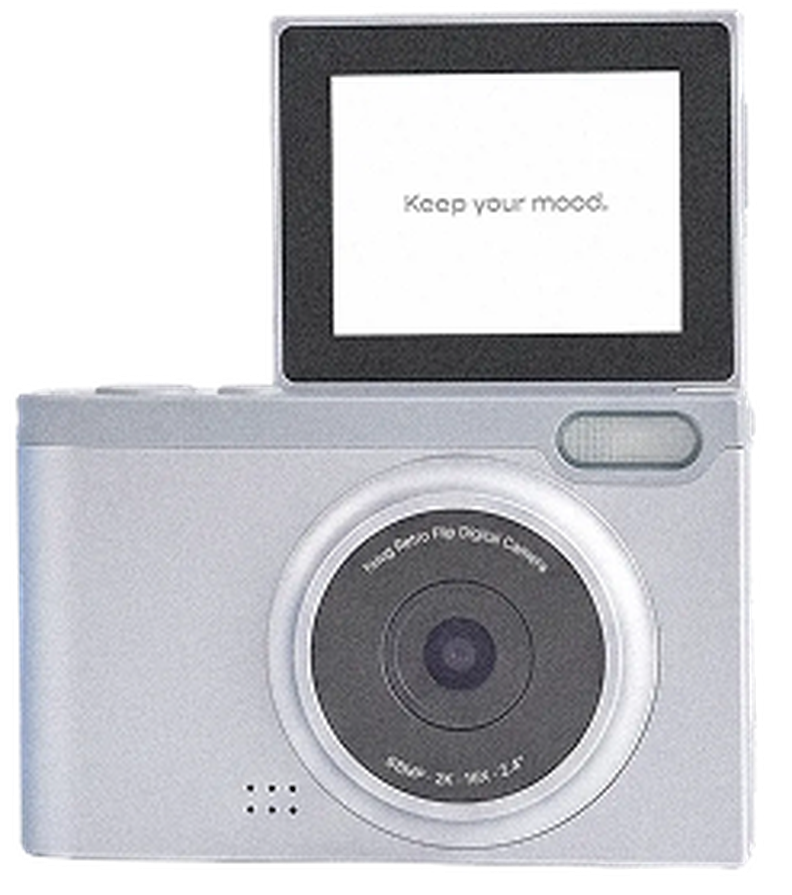

내 사진도 휴그 카메라 느낌으로
사진은 서버로 전송되지 않고 이 화면 안에서만 바뀌어요.
JPG/PNG 사진을 올려주세요.
사진을 고르면 모델별 느낌을 바로 비교할 수 있어요.
필터 체험이며 실제 촬영 결과와 다를 수 있음
이미지를 길게 눌러 저장하세요
휴그 카메라 작례 지도

1/2
항목별로 1개씩 골라주세요. 카메라 추천에만 활용돼요.
2/2
카메라 추천에만 활용돼요.
휴그 카메라 작례 지도
사진은 서버로 전송되지 않고 이 화면 안에서만 바뀌어요.
JPG/PNG 사진을 올려주세요.
사진을 고르면 모델별 느낌을 바로 비교할 수 있어요.
필터 체험이며 실제 촬영 결과와 다를 수 있음
이미지를 길게 눌러 저장하세요
지도에서 휴그 카메라로 찍은 작례를 보고,
내 사진도 그 느낌으로 바꿔보세요.